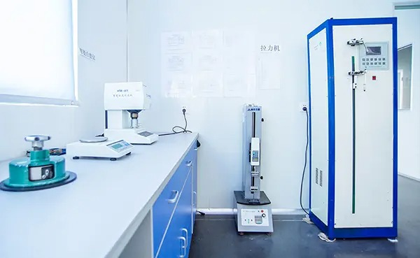

What ISO 13485:2016 Recertification Means
Changzhou Newrise Medical & Hygiene Products Co., Ltd. is proud to announce the successful recertification of our Quality Management System (QMS) to ISO 13485:2016 — the internationally recognized standard specifically designed for organizations involved in the design, development, production, installation, and servicing of medical devices.
This recertification, completed in November 2025 following a comprehensive audit by an accredited certification body, confirms that Newrise Medical continues to operate at the highest level of quality management rigor. For our customers and partners, this means every product that leaves our facility has been manufactured under a system that meets the most demanding international quality requirements.
"ISO 13485 recertification isn't a checkbox exercise — it's a comprehensive validation that our quality systems, processes, and culture meet the highest global standards." — Newrise Medical Quality Director
Understanding ISO 13485:2016
ISO 13485:2016 is not a general quality standard — it is specifically designed for the medical device industry. Unlike the more generic ISO 9001, ISO 13485 incorporates regulatory requirements and risk management principles that are unique to medical device manufacturing. Key areas covered include:
- Risk-based approach — Every process is evaluated for potential risks to product quality and patient safety, with controls implemented accordingly
- Traceability — Full documentation and traceability from raw materials through production to finished product distribution
- Cleanroom controls — Strict environmental monitoring and control in our 100,000-class (ISO Class 8) cleanroom (1,500㎡)
- Supplier management — Rigorous evaluation, qualification, and ongoing monitoring of all raw material suppliers
- Validation and verification — Scientific validation of manufacturing processes and verification that products meet specifications
- Post-market surveillance — Systems for collecting and analyzing field data, customer complaints, and adverse events
- Continuous improvement — Regular internal audits, management reviews, and corrective/preventive action (CAPA) processes
The Recertification Audit Process
Achieving ISO 13485 recertification is not a simple paperwork exercise. The audit process involves a thorough, multi-day evaluation conducted by independent, accredited auditors who examine every aspect of the quality management system:
| Audit Phase | Focus Areas | Duration |
|---|---|---|
| Documentation Review | QMS manual, procedures, work instructions, records | 2–3 days |
| On-Site Audit | Production floor, cleanroom, laboratory, warehouse | 3–4 days |
| Process Validation | Sterilization, packaging, equipment calibration | 1–2 days |
| Personnel Interviews | Quality team, production staff, management | 1 day |
| Findings & Close-Out | Non-conformance resolution, corrective actions | 2–4 weeks |
Our successful recertification was achieved with zero major non-conformances — a testament to the dedication of our quality team and the maturity of our QMS after more than two decades of continuous operation.
What This Means for Our Customers
ISO 13485 certification is not just a credential for our company — it is a guarantee for our customers. Here's what our recertification means for you:
Quality Assurance
Every product you source from Newrise Medical is manufactured under a quality management system that has been independently verified to meet international standards. This includes documented procedures for every stage of production, from incoming material inspection to final product release.
Regulatory Compliance
Our ISO 13485:2016 certification supports regulatory submissions in multiple markets. Combined with our CE marking for the European market and FDA registration for the United States, our customers can confidently distribute Newrise Medical products in regulated markets worldwide.
Supply Chain Confidence
For distributors and OEM partners, our certification provides assurance that our manufacturing processes are stable, controlled, and continuously improving. This reduces supply chain risk and supports your own quality and compliance requirements.
Traceability and Recall Readiness
ISO 13485 requires full batch-level traceability. If a quality issue is identified, we can quickly trace affected products, notify customers, and implement corrective actions — protecting both patient safety and your brand reputation.
🏅 Certification Summary
- ISO 13485:2016 — QMS recertified November 2025 (zero major non-conformances)
- CE Marking — European market compliance for all applicable product categories
- FDA Registration — US market registration maintained and current
- 100,000-class cleanroom — 1,500㎡ controlled environment for sterile manufacturing
- 40,000㎡ facility — Modern manufacturing plant in Changzhou, Jiangsu, China
Our Quality Control Process in Practice
Beyond the certification itself, Newrise Medical's quality commitment is reflected in the daily operations of our facility. Here's how quality is built into every product:
Incoming Material Control
Every batch of raw material — from non-woven fabrics to PE films and absorbent cores — undergoes inspection against defined specifications before entering production. We maintain approved supplier lists and conduct periodic supplier audits.
In-Process Quality Checks
During production, products are sampled and tested at defined intervals. Parameters include dimensions, weight, absorbency, tensile strength, and — for sterile products — bioburden and sterility testing.
Final Product Release
No product leaves our facility without passing final quality inspection. Each batch is accompanied by a Certificate of Analysis (COA) documenting the test results and confirming compliance with specifications.
Looking Forward: Continuous Improvement
ISO 13485 recertification is not an endpoint — it's a milestone in our ongoing commitment to quality. Newrise Medical continues to invest in:
- Staff training — Regular quality awareness and technical training for all production and quality personnel
- Equipment upgrades — Automated inspection systems and advanced testing equipment
- Process optimization — Lean manufacturing principles and Six Sigma methodologies
- Customer feedback integration — Systematic collection and analysis of customer input to drive product improvements
Partner with a Certified Manufacturer
When sourcing medical and hygiene products, certification matters. ISO 13485:2016 recertification demonstrates Newrise Medical's unwavering commitment to quality — not just as a policy statement, but as a daily operational reality.
For procurement professionals, distributors, and OEM partners, choosing an ISO 13485-certified manufacturer like Newrise Medical means choosing a partner who shares your commitment to quality, compliance, and patient safety.
Contact Rachel, our Sales Manager, at +86 519 86580890 or info@cznewrise.com to discuss your sourcing requirements.